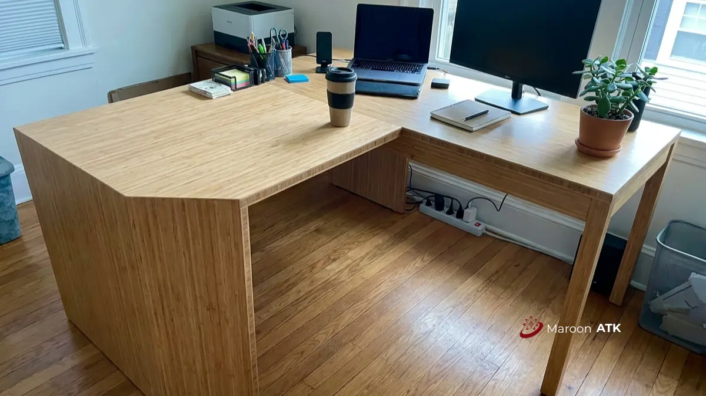

Apa Itu Custom Furniture Kantor Berbasis Material Ramah Lingkungan?
Custom furniture kantor berbasis material ramah lingkungan adalah furniture yang diproduksi sesuai ukuran dan kebutuhan spesifik kantor menggunakan bahan yang dapat terurai, didaur ulang, atau bersertifikasi keberlanjutan.
Konsep ini berbeda dari furniture kantor pada umumnya karena dua hal utama digabungkan sekaligus: personalisasi desain dan tanggung jawab lingkungan.
Sebuah meja kerja staf, misalnya, tidak hanya dibuat sesuai ukuran ruangan, tetapi juga dipastikan menggunakan material yang jejak karbonnya lebih rendah dibandingkan material konvensional. Pendekatan ini banyak diadopsi perusahaan yang sedang membangun laporan keberlanjutan atau memenuhi kriteria ESG dari investor maupun regulator.
Mengapa Material Ramah Lingkungan Penting untuk Furniture Kantor?
Material ramah lingkungan penting untuk furniture kantor karena mendukung pencapaian target ESG perusahaan sekaligus mengurangi risiko kesehatan akibat emisi bahan kimia dalam ruang kerja tertutup.
Selain aspek lingkungan, ada dua alasan praktis yang sering luput dari perhatian. Pertama, kualitas udara dalam ruangan (indoor air quality) sangat dipengaruhi oleh kandungan Volatile Organic Compounds atau VOC pada cat dan pelapis furniture. Furniture dengan finishing rendah VOC membantu menjaga kenyamanan karyawan yang bekerja dalam ruangan ber-AC sepanjang hari.
Kedua, banyak perusahaan multinasional maupun instansi pemerintah kini mensyaratkan dokumentasi keberlanjutan dari vendor sebagai bagian dari audit pengadaan, sehingga pemilihan material yang tepat juga berdampak langsung pada kelancaran proses procurement.
Di Indonesia, dorongan ini juga didukung oleh kebijakan pemerintah yang menjadikan Label Ramah Lingkungan Hidup atau ekolabel sebagai salah satu acuan dalam pengadaan barang dan jasa ramah lingkungan oleh kementerian, lembaga, pemerintah daerah, dan institusi.

Cara Memilih Jasa Custom Furniture Kantor Jakarta dengan Layanan Desain 3D
Optimasi layout ruangan dan presisi gambar kerja visualisasi 3D sebelum tahap fabrikasi furniture dimulai.
Apa Saja Jenis Material Ramah Lingkungan untuk Custom Furniture Kantor?
Jenis material ramah lingkungan untuk custom furniture kantor mencakup bio-luxe organik, bambu laminasi, kayu daur ulang bersertifikasi FSC, plastik upcycling, dan baja daur ulang dengan finishing rendah emisi. Berikut penjelasan masing-masing kategori beserta karakteristik utamanya:
Bio-Luxe: Material Organik Inovatif
Bio-luxe adalah kategori material organik seperti mycelium atau akar jamur yang dikeraskan menjadi struktur furniture kokoh namun tetap dapat terurai secara alami. Kombinasi mycelium dengan batu alam bertekstur matte banyak digunakan untuk memberi kesan mewah yang tetap terasa natural, cocok untuk ruang eksekutif atau area lobi yang ingin menonjolkan citra keberlanjutan tanpa mengurangi estetika premium.
Bambu Laminasi (Glubam)
Bambu laminasi semakin populer sebagai pengganti kayu keras karena bambu dapat dipanen dalam waktu singkat, sekitar 3 hingga 5 tahun, jauh lebih cepat dibandingkan siklus tumbuh kayu keras konvensional. Proses anyaman serat atau strand woven membuat material ini sangat padat, keras, dan tahan terhadap perubahan suhu maupun serangan rayap, sehingga sesuai untuk meja kerja staf maupun partisi workstation yang digunakan setiap hari.
Kayu Daur Ulang (Reclaimed Wood) dan Kayu Bersertifikasi FSC
Kayu daur ulang berasal dari bangunan atau furniture lama dan menawarkan karakter serat yang unik serta kepadatan tinggi tanpa perlu menebang pohon baru. Untuk kebutuhan kayu baru, sertifikasi Forest Stewardship Council atau FSC menjadi standar utama yang menjamin kayu berasal dari hutan yang dikelola secara bertanggung jawab, sehingga cocok dijadikan acuan dokumentasi ESG dalam laporan pengadaan perusahaan.
Plastik Upcycling
Plastik upcycling memanfaatkan limbah kantong plastik yang diproses menggunakan panas lalu dipotong dengan mesin CNC untuk menghasilkan lembaran padat. Material ini kemudian diubah menjadi furniture fungsional dan ergonomis seperti kursi atau bangku, dengan estetika minimalis dan variasi warna yang unik, cocok untuk area lounge atau ruang tunggu yang ingin tampil berbeda.
Baja Daur Ulang dan Finishing Rendah Emisi
Rangka furniture kantor bergaya industrial banyak menggunakan logam atau baja daur ulang karena kokoh dan dapat didaur ulang kembali di akhir masa pakainya. Cat dan pelapis yang digunakan sebaiknya berkategori rendah VOC atau Volatile Organic Compounds agar tidak menurunkan kualitas udara di dalam ruang kerja, terutama pada ruangan tertutup dengan sirkulasi udara terbatas.

Lemari arsip custom furniture kantor dari kayu bersertifikasi FSC untuk konsep ESG dan pelaporan keberlanjutan perusahaan.
Bagaimana Proses Pengadaan Custom Furniture Kantor Ramah Lingkungan Bekerja?
Proses pengadaan custom furniture kantor ramah lingkungan umumnya dimulai dari konsultasi kebutuhan ruang, pemilihan material bersertifikasi, penyusunan Surat Penawaran Harga, hingga instalasi di lokasi.
Tahapan ini biasanya berjalan sebagai berikut. Tim procurement atau General Affairs terlebih dahulu memetakan kebutuhan ruang dan jumlah unit furniture yang diperlukan. Vendor kemudian menawarkan pilihan material sesuai anggaran, termasuk opsi bersertifikasi FSC atau berbahan daur ulang.
Setelah kesepakatan spesifikasi tercapai, dokumen legal seperti Surat Penawaran Harga dan spesifikasi teknis diterbitkan sebagai dasar proses administrasi internal. Tahap akhir mencakup produksi sesuai ukuran custom, pengiriman, dan instalasi di lokasi kantor.
Faktor Apa Saja yang Memengaruhi Pemilihan Material Furniture Kantor?
Faktor yang memengaruhi pemilihan material furniture kantor meliputi anggaran, fungsi ruang, target sertifikasi ESG, ketahanan material terhadap iklim tropis, dan ketersediaan dokumen legal dari vendor.
- Anggaran Proyek: Biasanya menjadi pertimbangan awal, namun bukan satu-satunya faktor utama dalam kalkulasi total cost of ownership.
- Fungsi Ruang: Turut menentukan pilihan material. Misalnya area lobi cenderung memakai material bio-luxe atau kayu daur ulang untuk kesan mewah, sementara ruang staf lebih sering memakai bambu laminasi karena daya tahan dan efisiensi biaya.
- Target Sertifikasi ESG: Memengaruhi apakah dokumentasi pendukung seperti sertifikat FSC diperlukan sebagai bukti kepatuhan audit keberlanjutan perusahaan.
- Ketahanan Iklim Tropis: Iklim Indonesia dengan kelembapan tinggi menuntut pemilihan material yang tahan rayap, tidak mudah memuai, dan tahan perubahan suhu.
- Ketersediaan Dokumen Legal: Dokumen dari vendor seperti faktur pajak dan spesifikasi teknis menjadi pertimbangan krusial bagi instansi maupun korporasi yang menjalani audit internal.
Apa Saja Kesalahan Umum dalam Memilih Material Furniture Kantor Ramah Lingkungan?
Kesalahan umum dalam memilih material furniture kantor ramah lingkungan meliputi mengabaikan ketahanan material terhadap iklim tropis, tidak meminta bukti sertifikasi, dan hanya fokus pada harga termurah.
- Mengabaikan Ketahanan Tropis: Memilih material hanya berdasarkan tren visual tanpa mempertimbangkan ketahanannya terhadap kelembapan dan suhu tropis, yang dapat memperpendek umur pakai furniture.
- Tidak Meminta Bukti Sertifikasi: Tidak meminta bukti sertifikasi seperti dokumen FSC atau keterangan asal material daur ulang, sehingga klaim ramah lingkungan sulit diverifikasi saat audit.
- Terlalu Fokus pada Harga Termurah: Menentukan vendor hanya dari penawaran paling rendah tanpa mempertimbangkan Total Cost of Ownership, termasuk biaya perawatan dan potensi penggantian cepat di masa depan.
- Kurangnya Koordinasi Antar Departemen: Tidak melibatkan tim procurement sejak awal sehingga spesifikasi material berubah di tengah proyek tanpa persetujuan tertulis.

Portfolio Pengerjaan Custom Furniture Kantor Executive di Segitiga Emas Jakarta
Inspirasi pengerjaan furniture eksekutif prestisius dengan perpaduan material berkualitas tinggi dan pengerjaan presisi.
Bagaimana Perbandingan Material Ramah Lingkungan untuk Furniture Kantor?
Perbandingan material ramah lingkungan untuk furniture kantor menunjukkan bahwa setiap jenis memiliki keunggulan berbeda pada aspek ketahanan, estetika, dan kecepatan produksi:
| Material | Keunggulan Utama | Cocok Untuk |
|---|---|---|
| Bio-Luxe (Mycelium, Batu Alam) | Estetika mewah dan natural, dapat terurai alami | Area lobi dan ruang eksekutif |
| Bambu Laminasi (Glubam) | Cepat dipanen, padat, tahan rayap & perubahan suhu | Meja staf dan partisi workstation |
| Kayu Daur Ulang / FSC | Serat unik, hutan terkelola berkelanjutan | Furniture representatif dan dokumentasi ESG |
| Plastik Upcycling | Ringan, warna unik, estetika minimalis modern | Kursi lounge dan ruang tunggu |
| Baja Daur Ulang | Kokoh, durabilitas tinggi, dapat didaur ulang kembali | Rangka furniture gaya industrial |
Bagaimana Melanjutkan ke Tahap Pengadaan Setelah Menentukan Material?
Setelah menentukan material yang sesuai, langkah berikutnya adalah memverifikasi legalitas vendor dan memahami skema layanan procurement sebelum menandatangani kesepakatan.
Standar pengelolaan hutan berkelanjutan yang menjadi acuan sertifikasi FSC sejalan dengan prinsip pengadaan hijau yang mulai diadopsi berbagai lembaga, termasuk Forest Stewardship Council (FSC) sebagai badan sertifikasi internasional untuk pengelolaan hutan.
Bagi perusahaan yang ingin memulai proyek custom furniture kantor dengan material ramah lingkungan, tahap awal yang paling menentukan adalah konsultasi kebutuhan ruang dan anggaran bersama tim procurement yang berpengalaman menangani dokumen legal lengkap.
Sebelum menentukan vendor, banyak perusahaan juga perlu memverifikasi legalitas dan kepatuhan pajak calon supplier terlebih dahulu, sebagaimana dibahas dalam panduan supplier alat kantor jakarta.
Setelah legalitas vendor jelas, langkah berikutnya adalah memahami skema layanan procurement yang lebih rinci melalui ulasan pengadaan furniture kantor.
MAROON ATK melayani kebutuhan custom furniture kantor ramah lingkungan untuk wilayah Jakarta, Surabaya, Malang, Denpasar, Makassar, serta pengiriman ke seluruh Indonesia.
Konsultasikan Custom Furniture Ramah Lingkungan Anda
Dapatkan bantuan perhitungan anggaran, rekomendasi material ramah lingkungan berdokumen sertifikasi legal, dan visualisasi layout kantor dari tim ahli MAROON ATK.
Rangkuman Poin Penting
Penerapan material ramah lingkungan dalam custom furniture kantor merupakan langkah nyata dalam mewujudkan ekosistem kerja yang berkelanjutan sekaligus memenuhi standar ESG perusahaan modern.
- Keberlanjutan & Efisiensi: Material seperti bambu laminasi dan kayu daur ulang bersertifikasi FSC memadukan kekuatan fisik prima dengan jejak emisi karbon rendah.
- Kesehatan Ruang Kerja: Pemilihan finishing berbahan dasar air atau rendah VOC menjaga kualitas udara dalam ruangan tetap sehat bagi karyawan.
- Kepastian Legalitas & Dokumen: Pastikan bermitra dengan vendor terpercaya yang mampu melengkapi dokumen legal dan faktur pajak lengkap untuk keperluan audit pengadaan.
Mulailah transisi ruang kerja kantor Anda menuju konsep ramah lingkungan dengan perencanaan matang dan spesifikasi material yang tepat.
Pertanyaan yang Sering Diajukan
Custom furniture kantor ramah lingkungan adalah furniture yang dirancang sesuai kebutuhan spesifik kantor dengan material yang dapat terurai, didaur ulang, atau bersertifikasi keberlanjutan seperti FSC.
Tidak ada satu material yang paling unggul secara mutlak; bambu laminasi, kayu daur ulang, dan baja daur ulang sama-sama tergolong ramah lingkungan tergantung kebutuhan fungsi dan anggaran.
Bambu laminasi yang diproses dengan teknik strand woven umumnya padat, keras, dan tahan terhadap perubahan suhu maupun rayap sehingga cocok untuk penggunaan kantor jangka panjang.
Kisaran harga dapat bervariasi tergantung spesifikasi, volume pesanan, dan lokasi pengiriman; sebaiknya hubungi tim procurement untuk mendapatkan penawaran resmi sesuai kebutuhan melalui konsultasi WhatsApp MAROON ATK.
Mulai dengan menentukan kebutuhan ruang dan anggaran, lalu konsultasikan pilihan material bersertifikasi kepada penyedia yang dapat memberikan dokumen legal lengkap seperti Surat Penawaran Harga dan spesifikasi teknis.
Ketersediaannya masih terbatas dan umumnya dipesan secara custom melalui vendor yang bermitra dengan produsen material organik, sehingga waktu produksi cenderung lebih panjang dibanding material konvensional.